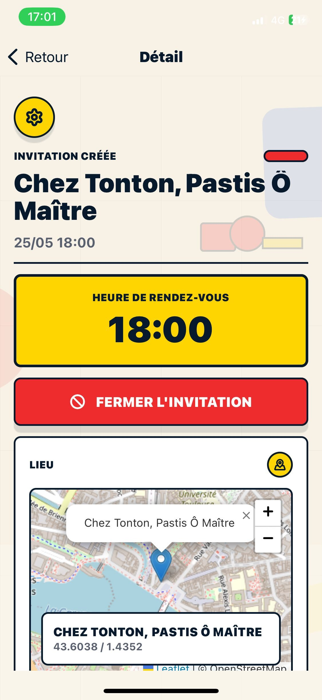

01 / LE SPOT
Ton endroit.
Votre rendez-vous.
Une terrasse, un resto ou ton canapé. Choisis le lieu et l’heure, le plan est posé.
POUR LES AMIS. POUR DE VRAI.
Un lieu, une heure, ta bande.
Mates s’occupe du plan. Vous, des souvenirs.
La vraie vie, c’est mieux ensemble.
Bientôt sur iOS et Android.
LE PLAN EST SIMPLE
Les groupes de discussion, c’est pour discuter.
Pour se retrouver, il y a Mates.
01 / LE SPOT
Une terrasse, un resto ou ton canapé. Choisis le lieu et l’heure, le plan est posé.
02 / LA BANDE
Un ami, ton groupe habituel ou toute la bande. L’invitation arrive, tout est clair.
03 / LA VRAIE VIE
Qui vient, qui a un peu de retard, comment y aller. Tout est là. Profitez du moment.
LE QG DE VOS SORTIES
Le prochain bon souvenir commence par une petite invitation.
Une invitation qui dit tout.Le lieu, l’heure et les invités. Au même endroit.
Tu sais qui sera là.Les réponses et les retards, sans les relances.
Du plan au point de rendez-vous.Itinéraire, Uber et réservation à portée de main.

LE MEILLEUR RÉSEAU SOCIAL ?
Les apéros improvisés. Les dîners qui s’éternisent.
Les « une dernière et on rentre ».
On a créé Mates pour qu’il y en ait plus.
ON VOUS VOIT VENIR
Une application mobile pour organiser des sorties entre amis. Tu choisis un lieu, une heure et tes invités. Mates rassemble les réponses et les informations utiles pour vous retrouver.
Gardez-le pour les discussions et les blagues. Mates vous aide à retrouver le plan, savoir qui vient et ouvrir l’itinéraire, sans fouiller dans les messages.
Oui ! Un tête-à-tête, un petit groupe ou toute la bande : tu choisis qui reçoit ton invitation. Tu peux aussi préparer des groupes pour tes sorties habituelles.
Mates arrive bientôt sur iOS et Android. Écris-nous à contact.mates@equipe4.fr pour nous faire part de ton intérêt et en savoir plus sur le lancement.
BIENTÔT SUR IOS & ANDROID
Les meilleurs plans commencent par quelqu’un qui propose.
Et si cette fois, c’était toi ?